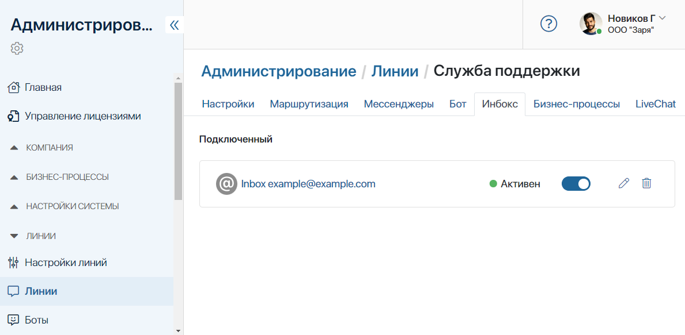

Подключите электронный почтовый ящик к линии в качестве одного из каналов сбора обращений от клиентов. Пользователи смогут написать письмо на вашу корпоративную почту, а операторы ответят на запрос из интерфейса ELMA365. При этом история переписки с каждым клиентом сохранится внутри системы.
При получении нового письма в разделе Линии будет создана новая сессия. Её название будет соответствовать теме письма. Вы будете видеть имя пользователя и его почту. Если клиент уже обращался, предыдущая сессия возобновится, и сообщение отобразится в ней. Подробнее об этом читайте в статье «Обработать обращение».
Кроме того, в линиях, к которым подключена электронная почта, операторы могут начинать общение с клиентами самостоятельно. Как это сделать, читайте в статье «Создать сессию с внешним пользователем».
начало внимание
Настроить подключение электронной почты к линии могут только администраторы системы.
конец внимание
Подключить почту
К одной линии вы можете подключить один почтовый адрес. Для этого выполните следующие действия:
- Перейдите в Администрирование > Линии.
- Выберите линию из списка или создайте новую, нажав на кнопку + Линия в правом верхнем углу.
- Перейдите на вкладку Инбокс.
- Нажмите кнопку Включить в центре страницы.
- В открывшемся окне настроек выберите вкладку:
- Расширенные — настройки для подключения почты с помощью протоколов SMTP и IMAP, например, для почтового адреса с корпоративным доменом;
- Простые — настройки для подключения самых распространенных почтовых сервисов. На этой вкладке в полях Сервис*, Логин* и Пароль* достаточно указать наименование сервиса и логин и пароль от подключаемой электронной почты.
1. Настройки учётной записи.
- E-mail* — укажите адрес подключаемой электронной почты;
- Сервис* — выберите почтовый сервис из выпадающего списка: Gmail, Mail, Yandex, Rambler, Yahoo, Outlook, Office365.
Если вы подключаете почту с корпоративным доменом, выберите опцию Другой и заполните настройки подключения протоколов SMTP и IMAP;
- Авторизация по OAuth2 — для подключения почтового ящика к линии можно использовать авторизацию через OAuth2. В этом случае передавать пароль от почты на стороне ELMA365 не требуется. Достаточно ввести электронный адрес в полях E-mail* и Логин*, затем указать почтовый сервис и авторизоваться в нём. Это обеспечивает простоту интеграции и дополнительную безопасность учётных данных.
Использование внешней авторизации при подключении почты доступно, если администратор системы настроил модуль OAuth2 для авторизации в почтовом сервисе. Подробнее читайте в статье «Пользовательский модуль OAuth2 для авторизации через сторонние сервисы».
начало внимание
Чтобы использование авторизации через OAuth2 для подключения почты стало доступно, администратору системы нужно включить фича-флаг enableLinesOauth2. Подробнее об этом читайте в статьях «Изменение параметров On‑Premises Enterprise» и «Изменение параметров On‑Premises Standard». Если вы используете поставку SaaS, для включения фича‑флага обратитесь к вашему менеджеру ELMA365.
конец внимание
2. Настройки SMTP и IMAP подключения.
Наименования серверов SMTP и IMAP должны состоять из следующих параметров: имя протокола и ваш домен или поставщик электронной почты (разделяются точкой), а также используемый порт подключения (перед параметром ставится двоеточие). Параметры защиты подключения, от которых зависит цифровой порт, настраиваются администратором, создавшим электронный адрес.
- Настройки SMTP подключения:
- SMTP сервер* — укажите параметры протокола исходящей почты и используемый порт. Возможны следующие порты подключения: 25, 465, 587. Пример заполнения поля: smtp.myserver.com:465;
- Использовать TLS — включите опцию, если почтовый сервис использует передачу данных по зашифрованному соединению;
- Логин* и Пароль* — укажите логин и пароль подключаемого сервера SMTP, которые можно запросить у администратора сервера.
- Настройки IMAP подключения:
- IMAP сервер* — укажите параметры протокола входящей почты и используемый порт. Большинство серверов используют порт 143 или 993. Пример заполнения поля: imap.myserver.com:993;
- Защита соединения — выберите параметр шифрования данных, используемый сервером. Доступны опции: Нет, STARTTLS, TLS;
- Логин* и Пароль* — укажите логин и пароль подключаемого сервера IMAP, которые можно запросить у администратора сервера.
Обратите внимание, в настройках некоторых почтовых сервисов необходимо дополнительно разрешить доступ к почтовому ящику по протоколу IMAP.
Настройки доступа по протоколу на примере сервиса Yandex
Для сервиса Yandex перейдите в раздел Все настройки > Почтовые программы. Включите опции С сервера imap.yandex.ru по протоколу IMAP и Пароли приложений и OAuth-токены. Сохраните настройки. После этого необходимо сгенерировать специальный пароль для приложения. Это нужно, чтобы обезопасить учётную запись и не сообщать сторонним сервисам основной пароль от аккаунта. Подробнее об этом читайте в документации от Yandex в статье «Пароли приложений». Для создания пароля перейдите в Управление аккаунтом и в разделе Пароли и авторизации выберите Включить пароли приложений. Введите пароль от аккаунта, чтобы подтвердить действие, и нажмите Создать новый пароль. Укажите тип приложения Почта, затем введите название приложения, например, ELMA365, и нажмите Создать. В открывшемся окне скопируйте сгенерированный пароль для приложения. После создания пароля приложения вернитесь в интерфейс ELMA365 и в окне подключения электронной почты введите сгенерированный пароль приложения в поле Пароль*. |
3. Настройки подписи.
В этом блоке укажите подпись, которая будет добавляться к вашим сообщениям в линии. Пользователи увидят её во входящих письмах. Вы можете пропустить этот шаг и указать подпись позднее.
Если вы не используете OAuth2-авторизацию, соединение с почтовым сервером произойдёт автоматически на основе данных, введённых ранее.
При использовании OAuth2 выберите из списка почтовый сервис, который указали в настройках. В открывшемся окне войдите в аккаунт, используя свои учётные данные.
Когда соединение будет успешно установлено, электронная почта подключится к линии. В настройках линии на вкладке Инбокс вы увидите название и статус привязанного ящика.

Чтобы отвязать линию от почты, нажмите на кнопку напротив её названия. Статус соединения изменится с Активен на Разорван. В дальнейшем вы сможете снова подключить почту к линии, нажав на эту кнопку.
Справа от кнопки активации подключения доступны дополнительные опции:
— нажмите на кнопку, чтобы перейти в Настройки подключения. Здесь вы сможете изменить подключенный адрес или отредактировать подпись;
— нажмите кнопку, чтобы удалить подключение почты к линии.